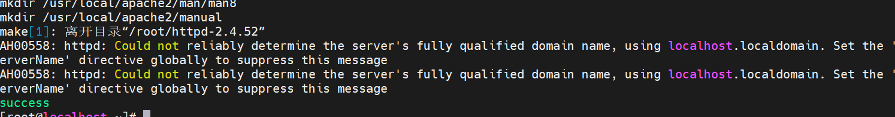

第四周作业
自建yum仓库，分别为网络源和本地源
1
2
3
4
5
6
7
8
9
10
11
12
13
14
15
16
17
18
19
20
21
22
23
24
25
26
27
28
29
30
31
32
33
34
| [base]
name=base
baseurl=file:///mnt/package
https://mirrors.cloud.tencent.com/centos/$releasever/os/x86_64/
https://repo.huaweicloud.com/centos/$releasever/os/x86_64/
gpgcheck=1
gpgkey=file:///etc/pki/rpm-gpg/RPM-GPG-KEY-CentOS-7
https://mirrors.cloud.tencent.com/centos/$releasever/os/x86_64/RPM-GPG-KEY-CentOS-7
https://repo.huaweicloud.com/centos/$releasever/os/x86_64/RPM-GPG-KEY-CentOS-7
[epel]
name=epel
baseurl=file:///var/www/html/epel
http://mirrors.cloud.tencent.com/epel/$releasever/x86_64/
https://mirrors.huaweicloud.com/epel/7/x86_64/
gpgcheck=1
gpgkey=file:///etc/pki/rpm-gpg/RPM-GPG-KEY-CentOS-7
http://mirrors.cloud.tencent.com/epel/RPM-GPG-KEY-EPEL-7
https://mirrors.huaweicloud.com/epel/RPM-GPG-KEY-EPEL-7
[root@ansible ~]
已加载插件：fastestmirror, langpacks
Determining fastest mirrors
* base:
* epel:
base | 2.9 kB 00:00:00
epel | 2.9 kB 00:00:00
(1/2): base/7/primary_db | 3.2 MB 00:00:00
(2/2): epel/7/primary_db | 6.9 MB 00:00:00
源标识 源名称 状态
base/7 base 4,070
epel/7 epel 13,743
repolist: 17,813
|
编译安装http2.4，实现可以正常访问，并将编译步骤和结果提交
将编译过程写成脚本
1
2
3
4
5
6
7
8
9
10
11
12
13
14
15
16
17
18
19
20
| #!/bin/bash
core=`lscpu | sed -rn '/^CPU\(/s/.*: +(.*)/\1/p'`
sed -i '/0/a\[epel]\nname=epel\nbaseurl=http://10.0.6.25/epel\nenabled=1\ngpgcheck=0' /etc/yum.repos.d/local.repo
yum clean all
yum install -y wget bzip2 apr-devle apr-util-devel gcc pcre-devel
wget https://dlcdn.apache.org//httpd/httpd-2.4.52.tar.bz2 --no-check-certificate || { echo "下载失败，重试" ; exit; }
tar jxvf httpd-2.4.52.tar.bz2
cd httpd-2.4.52
./configure
make -j$core
make install
echo 'PATH=/usr/local/apache2/bin/:$PATH' > /etc/profile.d/httpd.sh
. /etc/profile.d/httpd.sh
groupadd -g 1020 -r apache5
useradd -g apache5 -u 1020 -s /sbin/nologin apache5
sed -i -e 's#User daemon#User apache5#' -e 's#Group daemon#Group apache5#' /usr/local/apache2/conf/httpd.conf
apachectl -k start
apachectl -k restart
firewall-cmd --zone=public --add-port=80/tcp --permanent
systemctl restart firewalld
|
编译成功,可以访问

利用sed 取出ifconfig命令中本机的IPv4地址
1
2
| ifconfig eth0 | sed -rn 's/inet +(.*) +n.*/\1/p'
10.0.6.25
|
删除/etc/fstab文件中所有以#开头，后面至少跟一个空白字符的行的行首的#和空白字符
1
2
3
4
| [root@ansible srete]
/dev/mapper/centos-root / xfs defaults 0 0
UUID=fa726e04-47d9-4081-a349-8f4e16c83ff0 /boot xfs defaults 0 0
/dev/mapper/centos-swap swap swap defaults 0 0
|
处理/etc/fstab路径,使用sed命令取出其目录名和基名
1
2
| [root@ansible ~]
etc fstab
|